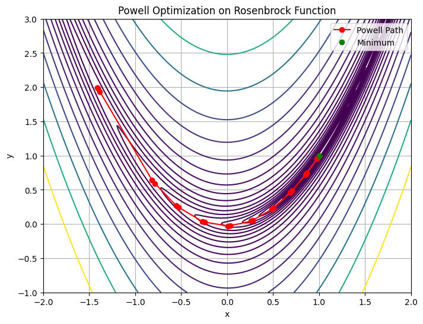

Powell’s Direction Set Method#
References#
Powell, M. J. D. (1964). An efficient method for finding the minimum of a function of several variables without calculating derivatives. The Computer Journal, 7(2), 155–162. https://doi.org/10.1093/comjnl/7.2.155
SciPy Documentation: scipy.optimize.minimize — method=’Powell’
Videos#
Overview of Powell’s Method#
Powell’s Direction Set method is a derivative-free optimization algorithm used to minimize scalar-valued functions of multiple variables. It proceeds by performing successive 1D minimizations along a set of directions and updates those directions iteratively based on performance.
This method is especially valuable for:
Functions where derivatives are unavailable or expensive to compute
Moderate-dimensional problems (not suitable for high dimensions)
Smooth, continuous landscapes
Key Features#
Uses a set of directions, initially aligned with coordinate axes
Performs line searches along each direction
Updates directions to accelerate convergence (using conjugate-like moves)
Powell’s Method in Action — Rosenbrock Function#
import numpy as np
from scipy.optimize import minimize
# Rosenbrock function
def rosen(x):
x = np.asarray(x)
return sum(100.0 * (x[1:] - x[:-1]**2.0)**2.0 + (1 - x[:-1])**2.0)
# Starting point
x0 = np.array([1.3, 0.7, 0.8, 1.9, 1.2])
# Run Powell’s method
res = minimize(rosen, x0, method='Powell', options={'disp': True})
# Show results
print("Minimum Value :", res.fun)
print("Optimum at :", res.x)
print("Function evaluations :", res.nfev)
print("Number of Iterations :", res.nit)
Optimization terminated successfully.
Current function value: 0.000000
Iterations: 18
Function evaluations: 988
Minimum Value : 1.6967633615782998e-22
Optimum at : [1. 1. 1. 1. 1.]
Function evaluations : 988
Number of Iterations : 18
Visualizing Powell’s Method in 2D#
We can visualize the optimization path using the 2D Rosenbrock function:
import matplotlib.pyplot as plt
# 2D Rosenbrock function for plotting
def rosen2(xy):
x, y = xy
return (1 - x)**2 + 100 * (y - x**2)**2
# Track optimization path
path = []
def record_path(xk):
path.append(np.copy(xk))
# Redo optimization with 2D input
x0 = np.array([-1.5, 2.0])
res = minimize(rosen, x0, method='Powell', callback=record_path, options={'disp': True})
# Grid for contour
x = np.linspace(-2, 2, 400)
y = np.linspace(-1, 3, 400)
X, Y = np.meshgrid(x, y)
Z = rosen2([X, Y])
# Convert path to array
path2d = np.array([p[:2] for p in path])
plt.figure(figsize=(8, 6))
plt.contour(X, Y, Z, levels=np.logspace(-1, 3, 20), cmap='viridis')
plt.plot(*path2d.T, 'ro-', label='Powell Path')
plt.plot(res.x[0], res.x[1], 'go', label='Minimum')
plt.title("Powell Optimization on Rosenbrock Function")
plt.xlabel("x")
plt.ylabel("y")
plt.legend()
plt.grid(True)
plt.show()
Optimization terminated successfully.
Current function value: 0.000000
Iterations: 25
Function evaluations: 670

Discussion Questions#
How does Powell’s method compare in convergence rate to Nelder-Mead or Hooke-Jeeves?
In which types of problems would Powell’s method outperform gradient-based techniques?
What might happen if directions are not updated efficiently?
Try It!#
Try running Powell’s method on another smooth function from your field — calibration, cost estimation, or transport modeling.
Also explore how performance changes with different initial guesses and dimensionality.